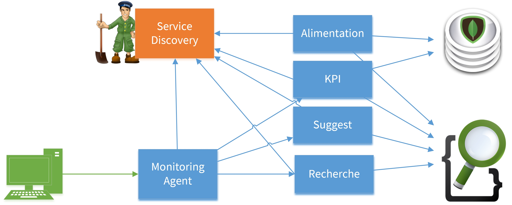
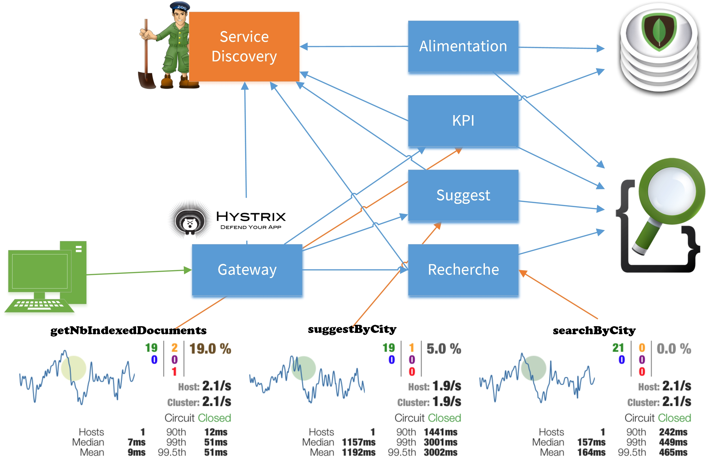

Microservices IRL
Ça marche chez un client, on vous dit comment !
Stéphane Lagraulet @stephlag
Olivier Revial @pommedouze
Vous allez voir...
- Le contexte client
- Pourquoi le choix des micro services pour notre client ?
- Les challenges à relever
- Notre première boîte à outils
- Le déploiement
- La surveillance
- Les tests
- Spring Cloud et les librairies Netflix
- L’utilisation de conteneurs
- Les protocoles d’échanges
Qui sommes nous ?
Stéphane Lagraulet
- Architecte SI
- Chez Ippon depuis 2013
- Code en Java depuis 2000
- @stephlag
Olivier Revial
- Développeur
- Chez Ippon depuis 2013
- Code en Java depuis le berceau
- @pommedouze
Ippon Technologies
- 200 ingénieurs en France et aux USA
- Paris, Nantes, Bordeaux
- Richmond (Virginie), Washington (DC)
- Expertise
- Digital, Big Data, Cloud
- Java, Agilité, DevOps
- Projets open source
- Tatami
- JHipster (v3 !)
- @ippontech, @ipponusa
Le projet
- Component Team en charge du moteur de recherche d’un site de e-commerce
- Architecture de microservices pour alimenter, interroger et monitorer les composants du moteur
- Projet multi plateformes et multilingue (multi tenants)
- Démarrage début 2015, déploiement s’étendant maintenant à d’autres équipes
Contexte technologique historique
Historiquement environnement full Microsoft :
.Net
SQL Server
Windows Server
Contexte technologique actuel
Pourquoi les microservices ?
Convergence de mouvements
- Agilité
- DevOps
- Complexité du SI
- Architecture Web
- Cloud
- Conteneurs
- Provisionning
Une définition
“Les microservices sont définis comme un architecture de services faiblement couplés avec des contextes fonctionnels définis.”
Adrian Cockroft
Challenges à relever
- Organisation
- Découverte de services
- Surveillance
- Programmation distribuée
- Gestion des pannes
- Stratégie de test
- Versionning, compatibilité
- Déploiement en continu
Des anti-patterns
- Nécessité
- Monolithe distribué
- Transactions distribuées
- Tables partagées - CQRS
- Découverte globale
- DRY
Loi de Conway
“Toute organisation qui construit un système... produira inévitablement une architecture dont la structure est une copie de la structure de communication de cette organisation.“
Melvin Conway - 1968
Le défi organisationnel
Une première architecture de microservices
Notre cas d'utilisation
Notre première boîte à outils
- Découverte de services
- Surveillance
- Programmation distribuée
Discovery avec Zookeeper
- Réserver des ressources dédiées
- Isolation des instances pour les services
- Bien utiliser le mécanisme de Curator (ServiceInstance)
- Marquer les instances “Down”
- Système CP
- Doit être surveillé
- Bien nettoyer les logs (zkCleanup)
Problème : Multi-tenancy (1)
Tenant specific :
/discovery/tenants/
/fr/
/kpi-service/...
/loader-service/...
/be/
/kpi-service/...
/loader-service/…
Multi tenant :
/discovery/notenant/monitoring-agent/...
Tolérance aux pannes avec le circuit breaker
Tester avec Wiremock / Saboteur
Continuous Delivery (1)
Aller plus loin avec Spring Cloud et les librairies Netflix
Enrichir notre boîte à outils
- Découverte et exposition de services
- Surveillance dynamique des services
- Routing
Spring Cloud
Notre cas d'utilisation
Multi-tenancy avec Spring Cloud
Tenant specific (specified in Zk connect string) :
/fr/services/discovery/
/services-gateway/...
/kpi-service/...
/loader-service/...
/be/services/discovery/
/services-gateway/...
/kpi-service/...
/loader-service/…
Live Demo
Notre roadmap
Déploiement, conteneurs, provisionning, communicationContinuous Delivery (2)
Spinnaker
Déploiement
- Mesos / Marathon ?
- Kubernetes / Rancher ?
- Docker Compose / Docker Swarm ?
Discovery
- Eureka ?
- Consul ?
- Etcd / CoreOs ?
Communication
- Plain Json ?
- Protobuf ?
- Avro ?
- Thrift ?
Merci !
Des questions ?
| github.com/orevial/devoxx-microservices | |
| blog.ippon.fr |
#DevoxxFR